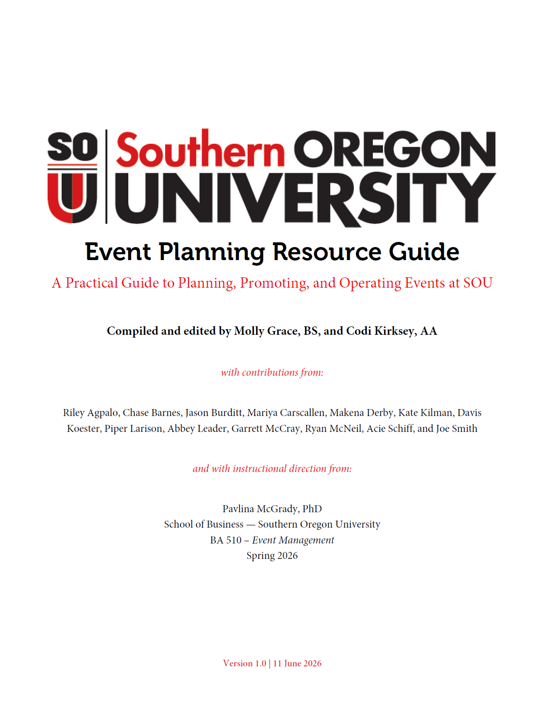
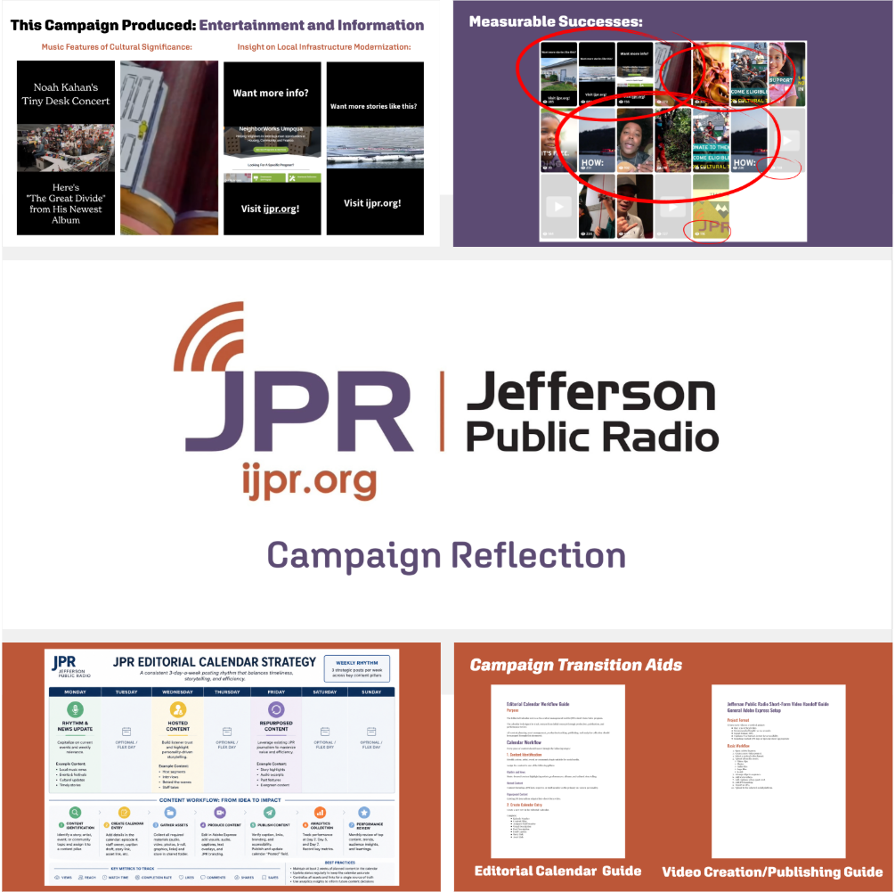
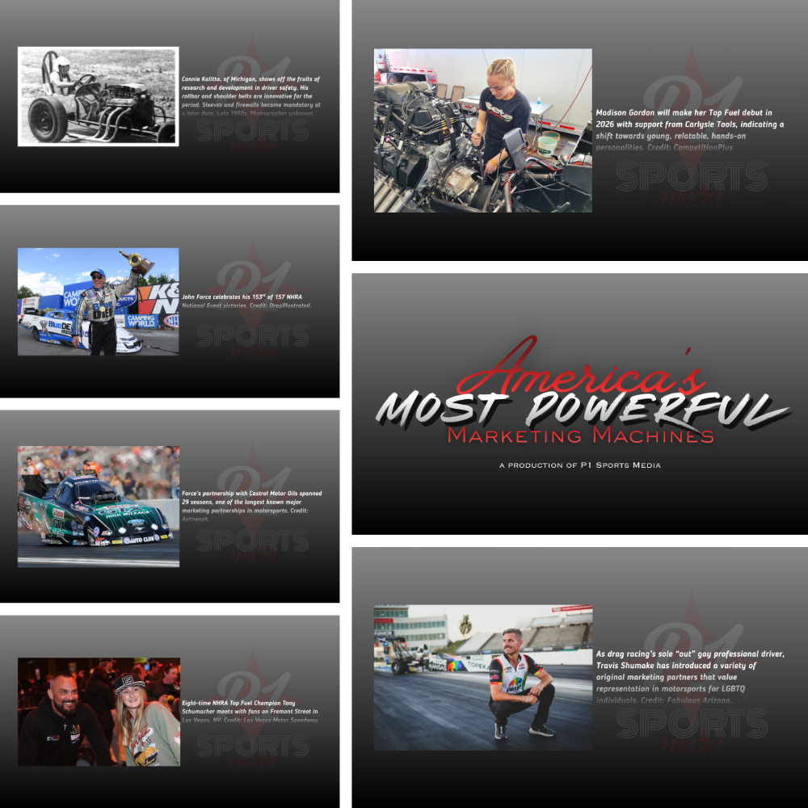

Southern Oregon University Event Planning Resource Guide

The Southern Oregon University Event Planning Resource Guide is a comprehensive resource for students, faculty, and staff involved in event planning at SOU. It provides guidelines, best practices, and resources to help ensure successful events on campus. The guide covers various aspects of event planning, including budgeting, marketing, logistics, and risk management. It also includes templates and checklists to assist with the planning process. Overall, the SOU Event Planning Resource Guide is an essential tool for anyone involved in organizing events at Southern Oregon University. This guide was created as a class project for BA 510 - Event Management. Codi served as the copywriter and editor for this project.
Jefferson Public Radio: Gen-Z/Millennial Engagement Campaign

The Jefferson Public Radio Gen-Z/Millennial Engagement Campaign was a video-based social media campaign designed to increase engagement with younger audiences. The campaign included a series of short videos that highlighted the unique aspects of JPR's programming and encouraged viewers to tune in and engage with the station on social media. The videos were shared on JPR's social media channels and were accompanied by targeted advertising to reach the desired audience. Overall, the campaign was successful in increasing engagement with younger audiences and helped to raise awareness of JPR's programming among this demographic. This campaign was created as a class project for COMM 508 - Creative Campaigns Workshop. Codi served as the agency account manager for this project, overseeing the development and execution of the campaign.
America's Most Powerful Marketing Machines

America's Most Powerful Marketing Machines is a working documentary proposal that explores how marketing and advertising evolved drag racing from a grassroots, post World War II leisure activity to a nationally-touring professional motorsport. The documentary will examine the role of marketing and advertising in shaping the sport's culture, fan base, and business model. It will also explore how drag racing has influenced popular culture and how it continues to evolve in the digital age. Overall, America's Most Powerful Marketing Machines aims to provide a comprehensive look at the history and impact of marketing in the world of drag racing. This documentary proposal was created as a class project for DCIN 204 - Reality on Your Screen. Codi served as the project manager for this project, overseeing the research, writing, and production of the proposal.